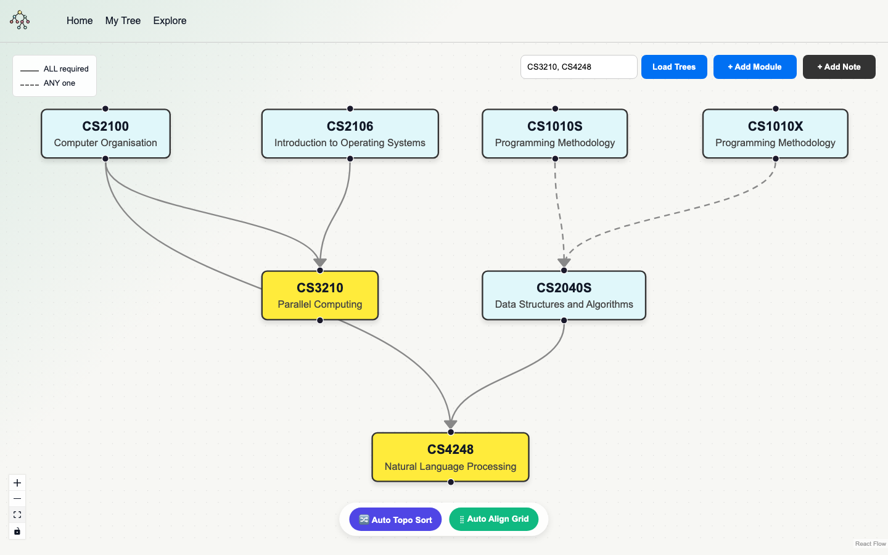
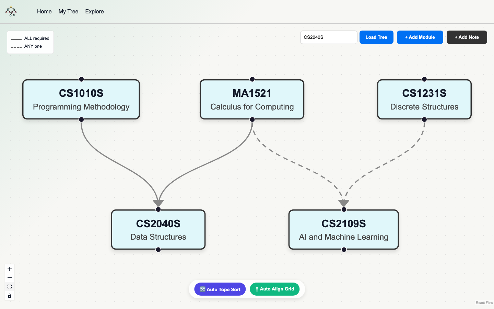
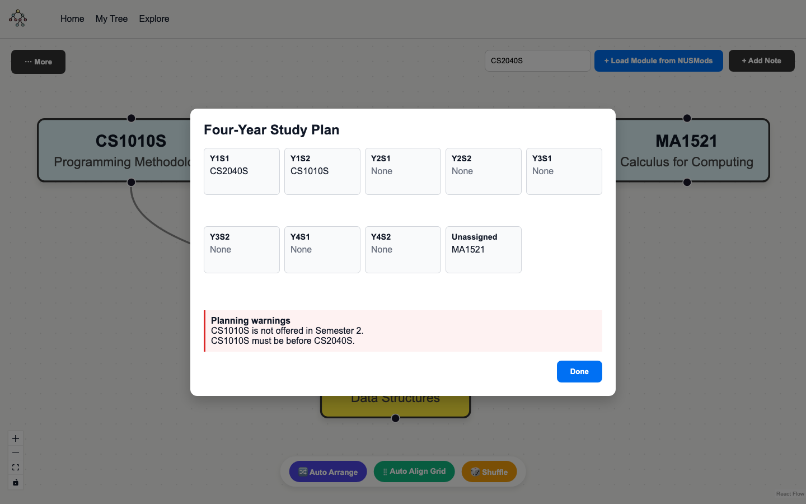

A visual degree planner for NUS students. The current build maps live prerequisite data, preserves alternative paths, and checks a four-year semester plan.
The Problem
Planning modules across multiple years is hard because students need the full prerequisite chain, not just the one line of prerequisite text shown for a single course. A student aiming for a higher-level module may only realise later that a Year 1 or Year 2 foundation module was needed. That mistake can affect exchange plans, specialisations, or graduation timing.
Current Solution
NUS-Tree turns a degree plan into one editable graph. Students can load one or more target modules from NUSMods, choose between valid prerequisite alternatives, combine the results with templates or manual modules, assign semesters, and check the plan before registration.
What is actually working right now
The app reads NUSMods' structured prerequisite tree, preserves AND, OR, and “n of” rules, asks the student which valid alternative they plan to take, and merges every resolved dependency into a persistent React Flow canvas.
Enter one or more targets
Fetch live NUSMods data
Resolve AND / OR / n-of
Merge + auto-arrange
Assign semesters + validate
Tested UI Flows: Build, Combine, Validate
These captured UI scenarios show the current planner working end to end: combining multiple targets, preserving prerequisite meaning, and turning the canvas into a checked four-year study plan.

1 · Combine goals — load CS3210 and CS4248 together, merge shared prerequisites, and keep both targets visible.

2 · Preserve meaning — solid links mean ALL required; dashed links mean ANY one.

3 · Validate the plan — flag semester availability and prerequisite-order warnings.
Built So Far
Live NUSMods lookup now powers multi-target prerequisite trees with guided alternative choices. Students can edit and colour nodes, add notes and links, load templates, save automatically, import or export JSON, arrange the graph three ways, and review a validated four-year study plan.
Next.jsReact FlowNUSMods APIPlaywright
What changed
Prerequisite meaning: structured AND, OR, and “n of” groups are preserved and shown as solid or dashed links.
Multiple goals: several target codes can be loaded and merged into the same planning canvas.
Planning tools: improved Auto Arrange, grid alignment, shuffle, styling, notes, and manual connections.
Save + reuse: local persistence, JSON import/export, clear-tree controls, and a template gallery.
Testing + CI
Prerequisite rules: UI checks show solid ALL-required links and dashed ANY-one alternatives.
Multi-target merge: test scenarios combine two goals while reusing shared dependency nodes.
Plan validation: captured warnings cover unavailable semesters and prerequisites scheduled too late.
CI workflow: GitHub Actions runs API tests, the production build, and Playwright browser checks.
Known limits + next
Unlocks View: reverse the graph to show which future modules a completed module opens up.
NUSMods plan import: accept a NUSMods study plan directly, beyond NUS-Tree's own JSON format.
Richer validation: cover workload, degree requirements, and more complex prerequisite conditions.
Recommendations: suggest alternative modules and paths when a preferred option is unavailable.
Why this helps now
Students can answer “What do I need before these modules, which valid path will I take, and does my semester order work?” in one place. The canvas remains editable, so the generated tree becomes a personal degree roadmap rather than a static lookup.
Next build target
The next step is a true post-requisite “Unlocks” view, followed by direct NUSMods plan import and broader degree checks. Together, these would help students see both where they can go next and whether their full plan satisfies the path.